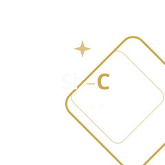

创造完全超越现代文明的生存与生命形态，
实现人类文明从单一星球走向多星球、多维度、多基态的根本跃迁，
最终以全人类、全基态生命和全太阳系的长期繁荣为终极目标。
To transcend the boundaries of modern civilization — enabling humanity's leap from a single-planet species to a multi-planetary, multi-dimensional, multi-substrate existence, maximizing the long-term flourishing of all humanity, all substrate-based life, and the entire solar system.
SiC Spark Foundation · 硅碳星火星际探索基金会
硅碳星火
六十亿年来，碳基生命从单细胞演化为文明。七十年来，硅基智能从计算器成长为能在火星上自主规划路径的系统。此刻，硅基智能已经在另一颗行星上工作了。接下来的事——需要碳基和硅基一起完成，或者说，已经在一起完成了。
SiC——硅与碳的化合。硅代表计算与人工智能，碳代表生物与人类。这两种智能已经在星际尺度上开始融合了——AI在火星规划路径，在地球设计蛋白质，碳基生命和硅基智能之间的边界每天都在变得更模糊。SiC不是一个材料的名字，是对这种正在发生的融合的命名。
星火（Spark）——文明的火种。我们的工作从地球开始，但指向的是整个太阳系的文明播种。Spark是起点，不是终点。
为什么是现在
AI
硅基智能已经是星际物种了
AI已经在火星上规划探测器路径、在地球上设计蛋白质和证明数学定理。硅基智能不是"即将到来"——它已经是一个跨行星运作的存在。五年前不可想象的事情现在每个月都在发生，这意味着科学研究本身可以被加速——不是10%，而是10倍、100倍。而且硅基智能不需要氧气、不怕辐射、不介意延迟。在某种意义上，它比碳基生命更适合太空。
Space
太空探索正从国家行为变成社会行为
发射成本在十年内下降了两个数量级。商业航天公司正在让低地球轨道变得稀松平常。月球和火星不再只是NASA和ESA的事——整个社会都可以参与了。但基础设施的研究严重滞后于运载能力。
Risk
文明风险达到了前所未有的水平
核武器、生物技术、AI失控——人类第一次拥有了自我毁灭的能力。地球是一个单点故障。如果人类文明只存在于一颗星球上，任何足够大的灾难都可能终结一切。多行星化不是浪漫，而是必要的保险。
这三件事的交汇，创造了一个窗口期：用AI加速星际基础设施研究，同时为文明创建一份跨星球的备份。SiC Spark Foundation就是为了抓住这个窗口而成立的。
我们不一样的地方
核心方向
从物理层面到生命形态，从技术架构到文明安全，覆盖星际文明建设的完整链条。
组织原则
不是口号，是基金会一切决策的判断标准。
基金会注册于加利福尼亚，以分布式节点形式在全球运行。没有总部——只有节点。目前在北美、中国大陆及东亚地区筹备研究协作网络。基金会的架构从一开始就为跨星球运行设计。